똑같은 그림만 50년 그렸는데 세상은 왜 열광했을까? 물방울 김창열·검은 기둥 윤형근·선 긋기 박서보, '시간과 서사'의 비밀 (아츠인유 이세라 대표)
▶ 원본 영상 보기한눈에 보기
- 김창열(물방울 49년), 윤형근(검은 기둥 34년), 박서보(묘법 56년)는 평생 한 가지 연작을 반복했다. 2026년에 이 세 작가의 집과 미술관이 잇따라 문을 열었다.
- 출발점은 저마다 달랐다. 김창열은 전쟁의 상처를 지우려 했고, 윤형근은 투옥과 감시로 쌓인 분노를 잊지 않으려 했다. 박서보는 '체념'의 몸짓에서 묘법을 시작했다.
- 같아 보이는 그림도 재료·기법·색을 계속 바꿨다. 형식을 지키면서 바꾼 이 과정이 스타일의 실체라는 것이 진행자의 분석이다.
- 영상의 결론은 스타일을 만드는 것이 재능이나 우연이 아니라 '시간'이라는 것이다. 긴 반복이 서사를 만들었기 때문에 초기작이 가장 비싸게 팔린다고 본다.
- 정체성을 지킬지 깨뜨릴지를 두고 두 진행자의 의견이 갈린다. 마지막 질문은 "나는 무엇을 10년 넘게 그만두지 않을 수 있는가"이다.
이런 분께 도움이 됩니다
- 단색화·추상화를 어떻게 봐야 할지 몰랐던 분: 작품 뒤의 삶과 서사로 보는 법을 얻을 수 있습니다.
- 평창동 김창열 화가의 집, 연희동 박서보미술관, 서교동 윤형근의 집에 가 볼 계획인 분
- '자기 스타일'이나 커리어 정체성을 고민하는 직장인
핵심 내용
세 작가의 공통점과 올해 문을 연 세 공간
- 2026년에 세 작가의 이름을 딴 공간이 잇따라 문을 열었다. 5월 평창동 김창열 화가의 집, 8월 연희동 박서보미술관, 9월 서교동 윤형근의 집이다. (0:33)
- 김창열·윤형근의 공간은 작가가 실제로 살며 작업하던 집이고, 박서보의 공간은 새로 연 미술관이다.
- 세 사람은 나이가 비슷하고 젊을 때부터 가깝게 지냈다. 한국 추상미술 1세대(김환기·유영국) 바로 다음 세대다.
- 20살 안팎에 전쟁을 겪었다. 1세대가 일본 유학 중에 추상을 받아들였다면, 이들은 해방 뒤 국내 미대에서 배웠다.
- 가장 큰 공통점은 평생 한 가지를 반복했다는 것이다. (2:00)
| 작가 | 반복한 것 | 기간 | 출발한 감정 | 시장의 인정 |
|---|---|---|---|---|
| 김창열 | 물방울 | 49년 | 전쟁의 상처를 지우려는 마음 | 물방울을 그리자마자 곧바로 (1976년 30점 완판) |
| 윤형근 | 번트 엄버+울트라마린 기둥 | 34년 | 분노 | 세상을 떠난 뒤에 |
| 박서보 | 묘법 | 56년 | 체념 | 2000년대 '단색화'라는 이름이 생긴 뒤 |
💡 질문은 "왜 하나만 그렸나"에서 시작해 "자기 스타일은 어떻게 생기나"로 옮겨 간다.
김창열: 전쟁의 상처를 지우려 그린 물방울
- 1929년 평안도에서 태어나 17살에 혼자 남쪽으로 내려왔고, 20살 무렵 한국전쟁을 겪었다. 중학교 동창 120명 가운데 60명이 전쟁 중에 죽었다고 한다. (11:14)
- 1965년 김환기의 권유로 록펠러 재단의 지원을 받아 뉴욕에 갔다. 가난해서 넥타이 공장에서 일하며 버텼고, 본인은 이 시절을 '암흑기'라 불렀다.
- 1969년 백남준의 도움으로 뉴욕의 페스티벌에 참가한 뒤 파리로 옮겼다. 마구간을 고쳐 작업실로 썼는데, 그곳에서 물방울을 발견했다.
- 물감을 긁어내 다시 쓰려고 캔버스에 물을 뿌려 뒤집어 두고 잠들었다. 다음 날 아침, 거친 마대 위에 맺힌 물방울이 햇빛에 반짝이는 것을 봤다.
- 물방울은 갑자기 나온 것이 아니라 약 15년에 걸쳐 형태가 바뀐 끝에 나왔다.
- 제사 (1964)
- 내장 그림
- 흘러내리는 액체
- 투명한 물방울
- 1제사 (1964)
죽은 이들에게 바치는 그림. 화면을 거칠고 두껍게 긁었는데, 전쟁 중에 본 총탄 자국에서 나왔다 (7:10)
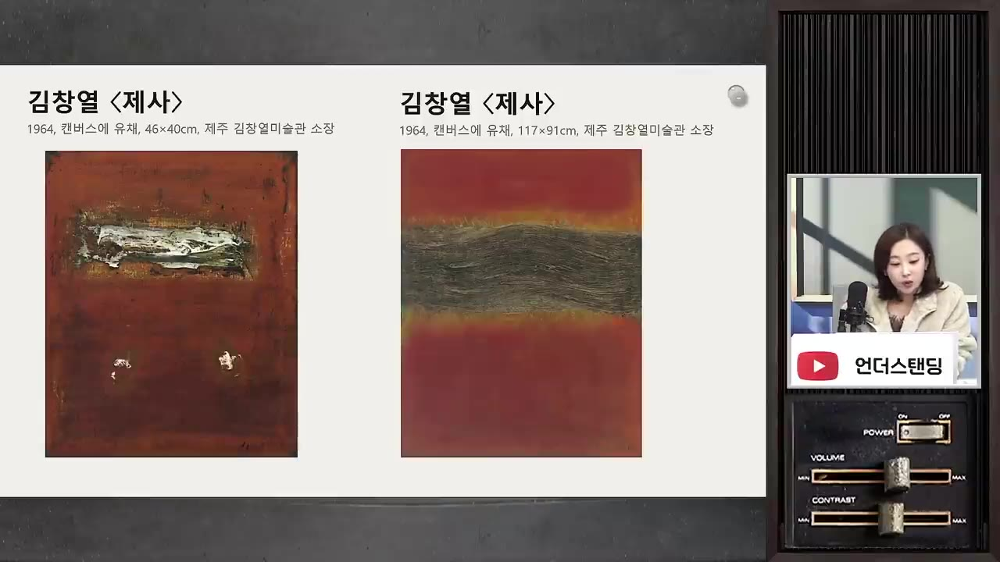
김창열 「제사」(1964) 두 점, 거칠게 긁은 화면 · ▶ 7:28 - 2내장 그림
뉴욕 시절. 둥근 덩어리 형상이 나오고, 작가는 이를 '내장의 그림'이라 불렀다
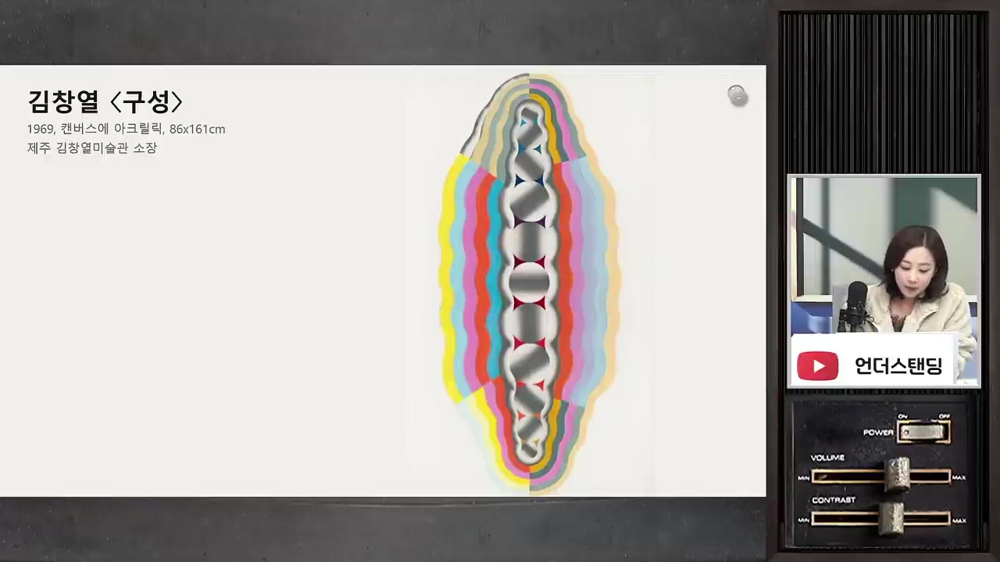
뉴욕 시절 덩어리 형상의 김창열 「구성」(1969) · ▶ 7:49 - 3흘러내리는 액체
1969년 말~1970년대 초, 덩어리가 녹아 끈적한 액체로 흘러내리고 점점 맑아진다
- 4투명한 물방울
1971~72년 무렵 첫 물방울 그림. 2025년 국립현대미술관 회고전에서는 이보다 1년 앞선 1971년 작품이 공개됐다
- 작가는 물방울을 그리는 일을 이렇게 말했다. "모든 것을 물방울 속에 용해시키고 투명하게 무(無)로 되돌려 보내기 위한 행위다. 분노도 불안도 공포도 모두 허(虛)로 돌릴 때 우리는 평안을 체험한다."
- 무로 돌리고 싶었던 것은 전쟁의 상흔이다. 작가는 "총탄 자국 하나하나가 물방울이 됐다"고 말했다.
- 지우고 싶었던 것은 또 있었다. 바로 자기 자신이다. 작가는 "누군가는 에고의 신장을 바라지만 나는 에고의 소멸을 지향한다"고 말했다.
- 그래서 붓자국이 거의 보이지 않게, 정말 물이 맺힌 것처럼 매끈하게 그렸다.
- 이프로는 이 의미가 나중에 갖다 붙인 해석일 수 있다고 반박했다. 진행자는 시작은 우연이었어도 반복하면서 의미가 생길 수 있다고 답했다.
- 결과는 아이러니하다. 자기 흔적을 지우려고 그린 물방울이 오히려 작가의 존재감을 가장 강하게 드러내는 그림이 됐다.
물방울이 진짜처럼 보이는 원리
- 1970년대 초 물방울은 붓이 아니라 에어브러시로 물감을 뿌려 만들었다. 이 기술은 뉴욕 넥타이 공장에서 본을 대고 스프레이로 무늬를 찍으며 배운 것이다. (14:16)
- 제주도립 김창열미술관은 이를 "붓질을 최소화해 화면에서 자기를 제거하려고 택한 방법"이라 설명한다. 작가 스스로는 '메카닉한 물방울'이라 불렀다.
- 1970년대 후반에는 스프레이 물감이 건강에 좋지 않고 표현도 바꾸고 싶어서 다시 붓을 들었다. 그래도 물감을 얇게 여러 번 올려 붓자국을 지웠다.
- 입체로 보이게 하는 요소는 세 가지다. (15:47)
- 물방울 자체에는 거의 색을 칠하지 않고 밑의 생천이 비쳐 보이게 둔다.
- 아래쪽에 짙은 그림자를 넣는다.
- 빛 받는 쪽에 아주 작은 흰 점을 하나 찍는다.
- 바탕이 칠하지 않은 거친 삼베천이라서, 결이 거칠수록 물방울이 더 매끈하고 진짜 같아 보인다.
- 형상이 분명하므로 완전한 추상화로 분류하기는 어렵다는 것이 진행자의 설명이다.
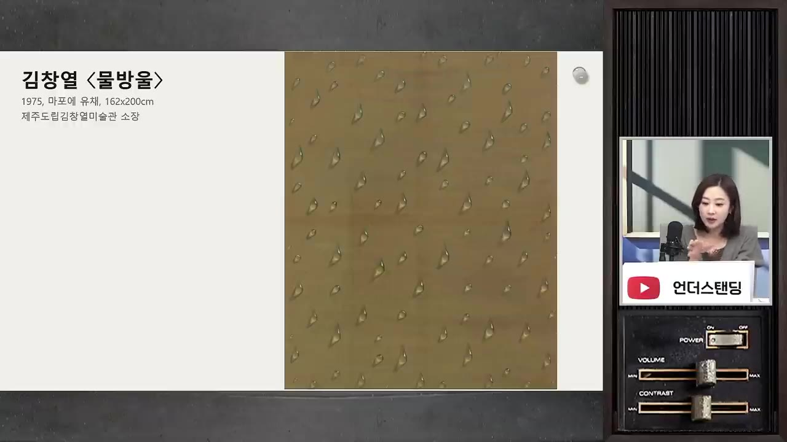
김창열의 변주와 '회귀'
- 이프로는 "팔리니까 못 바꾼 것 아니냐"고 물었다. 진행자는 김창열에게는 어느 정도 맞는 말이라고 인정했다. 세 작가 가운데 반복을 시작하자마자 시장이 반응한 사람은 김창열뿐이다. (18:51)
- 1976년 현대화랑(지금의 갤러리현대)에서 연 국내 첫 물방울 전시에 30점을 냈는데 모두 팔렸다.
- 진행자가 더 중요하게 본 것은 그다음이다. 팔리는 그림을 그대로 찍어 내지 않고 바탕을 계속 바꿨다.
- 1980년대: 흑연 작업, 한자·영어·한글·숫자 위의 물방울
- 1990년대: 독일 신문지, 초대장 위의 물방울. 아내의 말로는 "자나 깨나 물방울 생각뿐"이었고, 모든 것이 물방울의 실험실이었다.
- 한자를 고른 이유는 그 위에서 물방울이 가장 편안해 보였기 때문이다. 어릴 때 할아버지에게 배운 천자문 위에 물방울을 놓은 이 연작의 제목이 「회귀」다. (20:08)
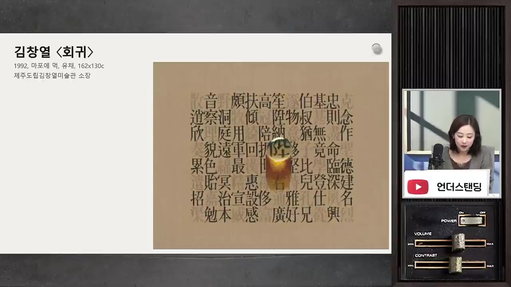
- 평창동 집에도 회귀가 담겨 있다. 1988년 건축가 우규승(자막상 '우규순'으로 들림)이 설계했는데, 평안도에서 할아버지와 살던 집을 떠올려 지었고 우물까지 들였다.
- 이번 리모델링은 제주도립 김창열미술관을 설계한 플랫폼건축사사무소가 맡았다. 가운데를 비운 '回(회)' 자 모양으로, 중정과 회랑을 따라 돌아오는 '회귀'의 동선을 만들었다.
- 이프로는 자재가 모두 새것이라 원래 집 같은 느낌은 덜하다고 평했다. 진행자는 생가 보존보다 작가의 정신을 건축으로 보여 주려는 설계라고 봤다.
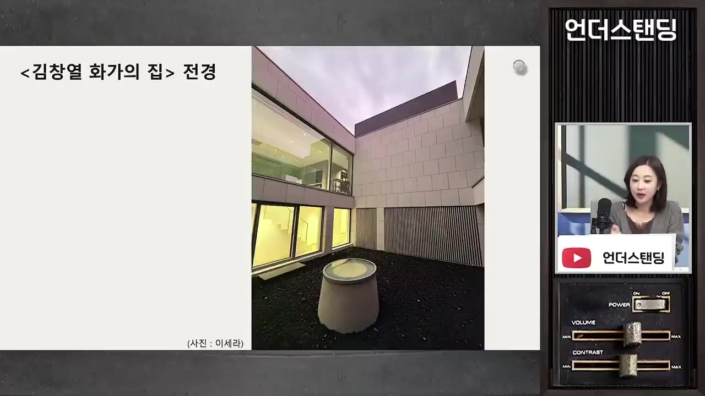
- 지하 아틀리에에는 작가가 쓰던 지팡이·슬리퍼·도덕경·작업 도구가 그대로 남아 있다. 미술관의 작품이 '결과물'이라면, 집에서는 그 결과물이 하루하루가 쌓인 것이라는 점이 보인다.
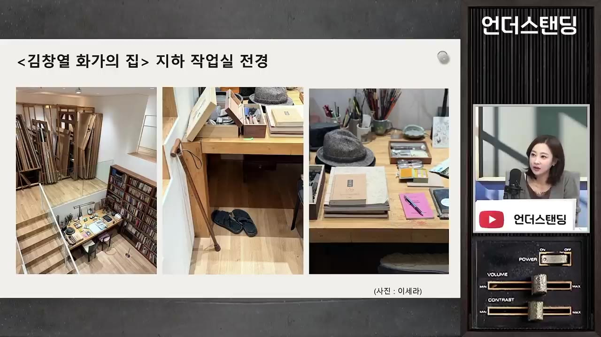
- 작품을 집중해서 보고 싶으면 제주도립 김창열미술관을 함께 가 보라고 권한다. 이곳도 중정을 가운데 두고 8개 건물이 '回' 자로 둘러싼 구조다.
49년을 끌고 온 힘은 '일과'
- 작가는 세상을 떠나기 직전 "난 여전히 못 그린 물방울이 많다"는 말을 남겼다. 진행자는 스타일은 완성되지 않고, 완성되지 않으니 반복이 끝나지 않는다는 뜻으로 읽었다. (29:06)
- 물방울의 발견은 우연이었지만 49년을 이어 간 것은 우연도 재능도 아닌 일과였다고 본다. (30:40)
- 매일 오전 9시 지하 작업실로 내려가 오후 6시까지 규칙적으로 작업했다.
- 조수였던 유진상 작가는 그가 노동을 예술가의 본령으로 여겼다고 증언했다.
- 2016년 건강이 나빠진 뒤에도 매일 2~3시간씩은 반드시 작업했다.
💡 예술은 김창열에게 일과이자 생활이었다. 이 태도를 가장 극단적으로 보여 준 작가가 윤형근이다.
윤형근: 분노를 잊지 않으려 그은 검은 기둥
- 그른 것을 그냥 넘기지 못하는 대쪽 같은 성품 때문에 감옥에 세 번 갔다.
- 서울대 제적 (1947)
- 보도연맹 연행 (1950)
- 부역 혐의 (1956)
- 반공법 연행 (1973)
- 전업 화가 (45세)
- 1서울대 제적 (1947)
미군정의 국립대 설립안(국대안) 반대 시위에 나갔다가 구류를 살고 제적돼 홍익대로 옮겼다. 그곳에서 김환기의 제자가 됐고, 훗날 사위가 된다
- 2보도연맹 연행 (1950)
시위 전력 때문에 끌려갔다가 처형 직전에 극적으로 풀려났다
- 3부역 혐의 (1956)
전쟁 중 피란 가지 않고 서울에 남았다는 이유로 6개월 수감됐다. 서울에 남은 것은 생계 때문이었다
- 4반공법 연행 (1973)
숙명(자막상 '숙명대') 미술 교사 시절, 중앙정보부장이 얽힌 부정입학 사건을 교장에게 따졌다. 다음 날 끌려갔고, 쓰고 다니던 모자가 레닌 모자와 비슷하다는 이유로 반공법에 걸렸다 (34:47)
- 5전업 화가 (45세)
학교를 그만두고 1980년까지 경찰의 요시찰 대상이 됐다. 이때부터 그림에서 색을 뺐다
- 1973년 이전 그림에는 김환기의 영향을 받은 푸른색 등 색이 있었다. 이후에는 두 색만 썼다. (38:06)
- 번트 엄버(탄 흑갈색)와 울트라마린(깊은 파랑)을 섞어 거의 검정에 가까운 색을 만든다.
- 칠하지 않은 생 면포를 바닥에 눕혀 놓고 큰 붓으로 내리긋는다.
- 한 번에 끝내지 않고, 몇 달이나 몇 년 뒤에 다시 꺼내 덧그은 작품이 많다.
- 1980년 6월 작품은 원래 서 있던 기둥이 쓰러진 모습이다. 5월 광주 소식을 듣고 분노해서 그렸다. (39:25)
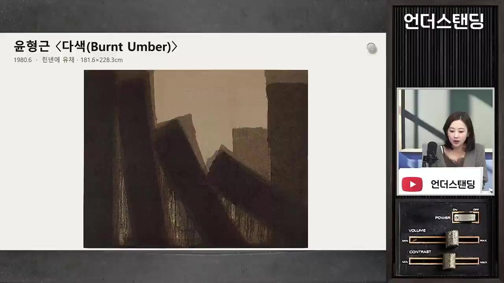
- 「천지문」: 하늘(블루)과 땅(엄버)을 섞어 기둥 두 개를 세우고, 그 사이에 칠하지 않고 남긴 자리를 '문'이라 불렀다.
- 서구식 캔버스를 싫어했다. 하얗게 칠해 마포 고유의 재질을 덮어 버리는 것이 싫다는 이유였다.
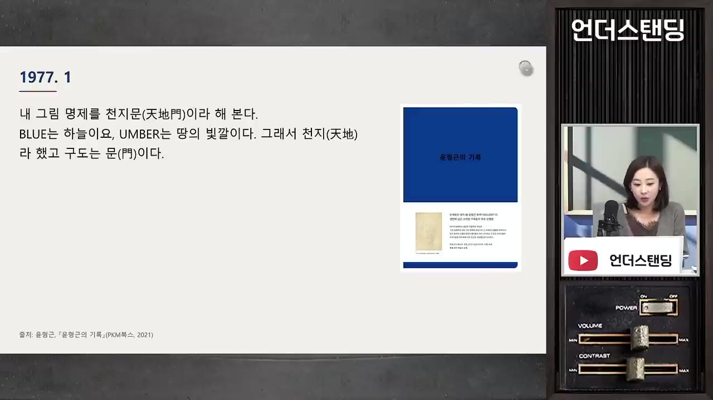
- 작가 본인은 "화가 나서 그랬다"고 말했다. 진행자는 일기를 함께 읽으며, 분노를 잊지 않고 기록하려고 반복한 것으로 해석한다. 작가에게 분노를 잊는 것은 '속물의 삶'으로 가는 일이었다.
- 그래서 진행자에게 이 그림은 우울한 그림이 아니라 "어떻게 살겠다고 결심한 사람의 의지"를 매일 보는 그림이다.
- 반대로 어떤 컬렉터는 작가를 좋아하면서도 침실에는 화사한 그림을 걸고 싶어서 사지 않겠다고 했다고 한다.
- 일기(책 『윤형근의 기록』으로 묶임)에서 인용한 구절:
- "나는 옳지 못한 것, 정직하지 못한 것을 보면 화가 난다."
- "인간은 흑백이 확실해야 된다. 명암이 확실치 않으면 위선자다."
- "허무하고 허하고 외로운 것은 내 고집 때문일 것이다."
- 늘 "좋은 그림보다 인간이 먼저 되는 게 중요하다"고 말했다. 요즘 눈으로는 예술에 대한 환상으로 보일 수 있지만, 그에게는 신념이었다.
윤형근의 변주와 늦은 인정
- 똑같아 보이는 기둥도 바뀌었다. 1970년대에는 부드럽게 번졌고, 1980년대 후반으로 갈수록 딱딱해지며 완전한 검정으로 갔다. (47:46)
- 1970년대 그림 가운데의 얼룩은 칠한 것이 아니다. 유화 물감의 기름이 먼저 배어 나와 저절로 생겼다.
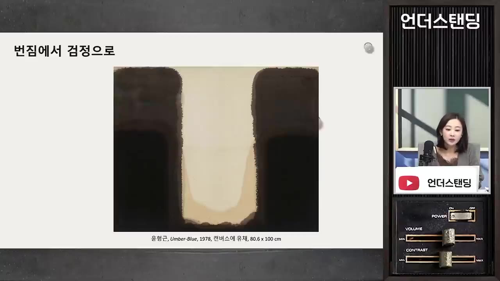
- 일기에 따르면 그려 온 것에 싫증이 나서, 두 덩어리를 하나로 합치고 작은 덩어리를 줄이는 일을 계속했다.
- 살아 있을 때는 그림이 잘 팔리지 않았다. 2007년 세상을 떠난 뒤 위상이 완전히 달라졌다.
- 작고 11년 뒤 국립현대미술관 회고전에 32만 명이 다녀갔다. 미술 시장이 커진 2019년 무렵 이전의 기록이다.
- 시장보다 동료가 먼저 알아봤다. 미국 미니멀리즘 조각가 도널드 저드(Donald Judd)는 윤형근과 동갑이다. (54:23)
- 1991년 서울 전시 때 윤형근을 만나 그림 몇 점을 바로 샀다. 1993년에는 뉴욕의 자기 스튜디오에서 윤형근의 미국 첫 개인전을 열어 줬다.
- 그 전시를 다시 꾸민 전시가 이번 달부터 뉴욕 저드 파운데이션에서 열리고 있다고 한다.
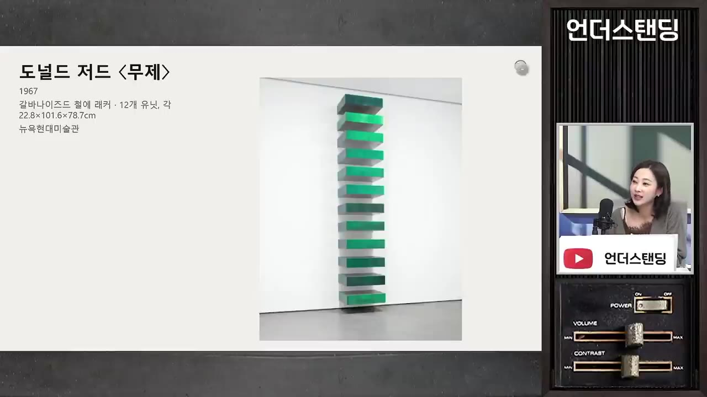
- BTS RM도 잘 알려진 팬이다. 2022년 솔로 앨범 『Indigo』의 첫 곡 제목이 'Yun'이고, 윤형근의 육성 인터뷰로 시작한다. (55:14)
- 육성 내용: "욕심을 다 버려야 돼. 천진무구한 세계로 들어가야지."
- 샌프란시스코 현대미술관에서 RM이 소장품으로 꾸린 한국 미술 전시가 열리고 있다. 그 안에 윤형근 작품 16점을 따로 묶은 공간이 있다.
- RM이 끌린 것은 그림과 삶의 태도가 하나라는 점이라고 진행자는 설명했다.
- 서교동 집은 김환기가 1963년 국민주택으로 분양받은 땅을 사위에게 준 것이다. 1983년 건축가인 동생이 설계해 새로 지었다.
- 1층 작업실 바닥에 물감 자국이 그대로 남아 있고, 2층에는 직접 소장했던 도널드 저드의 작품이 있다.
- 9월 1일에 열었다가 10월 17일에 닫았고, 내년 봄에 다시 연다.
박서보: 체념에서 시작해 다섯 번 변주한 묘법
- 출발점은 어린 둘째 아들의 모습이었다. 글씨 연습이 잘 안 되자 공책에 마구 줄을 긋고 던져 버리는 것을 보고 '체념'을 떠올렸다. (1:02:17)
- 자막에는 "김창열 작가의 아들"로 나오지만, 맥락상 박서보 자신의 아들이다.
- 이프로는 "체념을 저렇게 열심히 하는 게 무슨 체념이냐"며, 체념의 느낌은 잘 들지 않는다고 반박했다.
- 진행자는 세 작가의 공통점을 짚는다. 무언가를 잊고 체념하려는 행위가 오히려 새로운 것을 만들어 내는 반복이 됐다는 것이다.
- 연필 묘법
- 한지 묘법
- 검정
- 색채 묘법
- 신문지 위 묘법
- 1연필 묘법
캔버스에 물감을 칠하고, 덜 마른 상태에서 연필로 계속 긋는다. 덜 말라야 흔적이 남는다 (1:00:44)
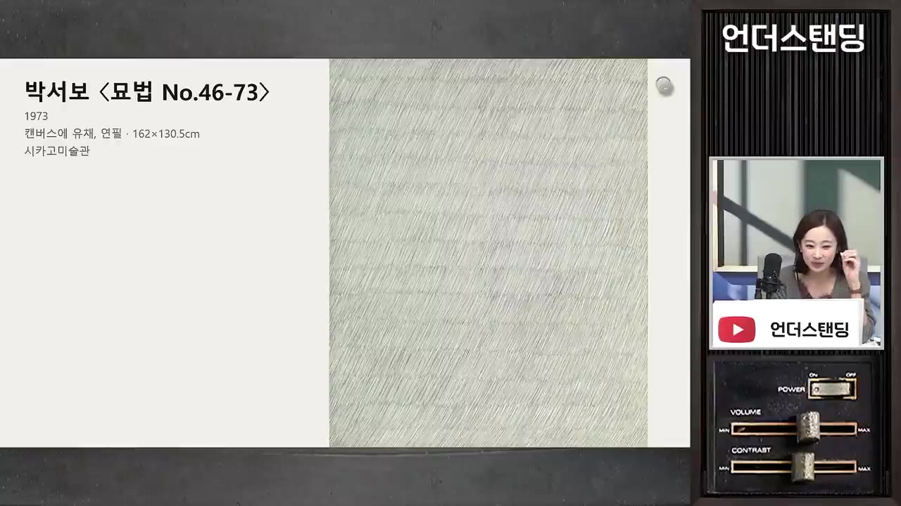
연필로 그은 박서보 「묘법 No.46-73」(1973) · ▶ 1:00:26 - 2한지 묘법
닥종이를 물에 오래 불려 겹겹이 붙이고, 마르기 전에 긋는다. 말린 뒤 색을 덧입힌다. 옆에서 보면 밭고랑처럼 솟아 있다
- 3검정
1990년대 중반. 어린 시절 아궁이의 그을림을 담았다
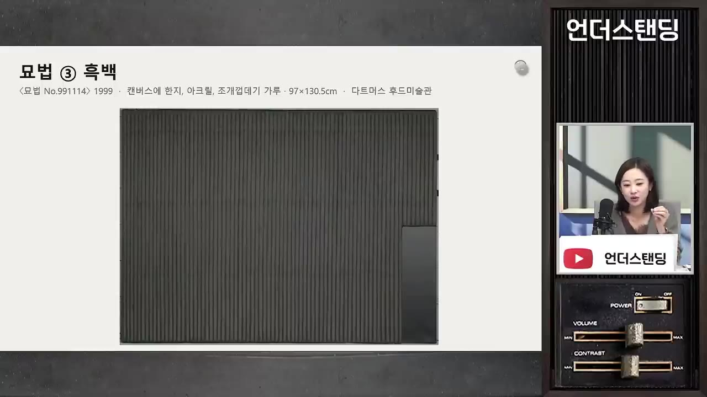
'묘법 ③ 흑백' 「묘법 No.991114」(1999), 캔버스에 한지 · ▶ 1:01:43 - 4색채 묘법
2000년대. 일본 산행에서 본 절정의 단풍에 감동해 색을 넣었다. 색 이름은 공기색·벚꽃색·홍시색·단풍색 등이다
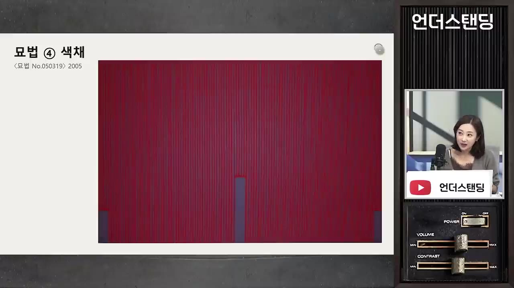
'묘법 ④ 색채' 「묘법 No.050319」(2005) · ▶ 1:07:11 - 5신문지 위 묘법
2022년 작업까지 이어진 변주
- 진행자는 진지한 수신(修身)의 과정 같던 작업이 말년에 가벼워지고 삶의 아름다움에 눈뜨는 쪽으로 간 변화를 좋게 봤다.
- 남긴 말(자막상 일부 불분명): "변화하지 않으면 추락한다. 그러나 변화하면 또한 추락한다." 덜 익은 개념으로 서둘러 세상에 나가도 추락한다는 말이 이어진다. (1:12:35)
- 진행자의 해석: 추락을 피할 방법은 없지만, 추락을 각오하고 계속 변화했다.
- 시장의 인정은 아주 늦게 왔다.
- 2000년 '단색화'라는 영문 이름이 처음 공식적으로 쓰였고, 평론가 윤진섭이 이를 밀었다.
- 2012년 국립현대미술관이 「한국의 단색화」전을 열며 '한국의 단색화' 브랜드를 만들겠다고 밝혔다.
- 조수를 써도 되느냐는 질문에는 "써도 된다"고 답했다. 다만 받아들이는 관객의 느낌은 다를 수 있다고 덧붙였다.
스타일을 만든 것은 시간, 값을 매기는 것은 서사
- 이프로의 정리: 검은 기둥은 누구나 한 번쯤은 비슷하게 그릴 수 있다. 하지만 "나는 이 방식으로 40년을 그렸다"는 사람은 없다. 추상화의 가치는 작품 자체보다 지속성과 시간의 힘에서 나온다. (50:20)
- 김창열이 물방울을 3년만 그리고 말았다면 그냥 '물방울 잘 그린 사람'이었을 것이다.
- 진행자의 결론도 같다. 1년 하고 말았다면 스타일이 될 수 없다. 오래 반복하고 쌓여야 시그니처로 인식되고 인정받는다. (52:51)
- 그래서 초기작이 가장 비싸다. 경매가를 보면 1970년대 물방울이 후기작보다 비싸다. (1:13:34)
- 완성도는 후기로 갈수록 높을 수 있다. 그런데도 초기작은 '서사의 시작'이자 희소하다는 이유로 값이 높다.
- 초기작이 인정받으려면 그 뒤에 이어진 긴 시간이 있어야 한다.
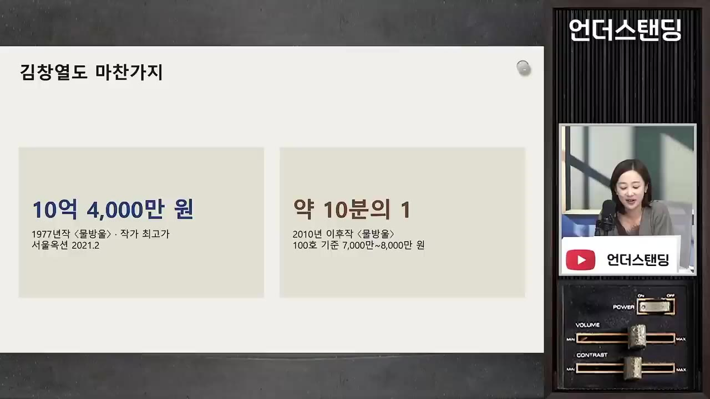
- 이프로는 이를 "작품이 아니라 스토리를 사는 것"이라 표현했다. 브랜드를 살 때 히스토리를 사는 것과 같다고 했다.
- 진행자는 작품을 더 깊이 볼 수 있다면 서사를 '작품 바깥의 것'이라며 피할 필요가 없다고 말했다.
💡 추상일수록 서사가 중요하다. 그리고 서사는 수십 년의 반복으로만 만들어진다.
반론: 정체성은 지킬 것인가, 깨뜨릴 것인가
- 이프로의 비판적 관점:
- 체념·분노·실망 같은 부정적 감정을 상품화한다는 느낌이 든다. 희망·기쁨을 그렸다고 설명하는 추상은 드물다.
- 스타일이 곧 상품이라서, 천재도 한 스타일을 고집하게 되고 다양한 작품이 나오지 않는다.
- 정체성이 생기면 그때부터 목표는 그것을 깨뜨리는 것이어야 하고, 지키는 일은 더 낮은 가치라고 본다. (1:20:50)
- 산길 비유: 자주 다니면 길이 나고 그 길로만 다닌다. 쉬운 길을 다지는 게 맞는지, 숲으로 들어가 보는 게 맞는지 생각해 볼 일이다.
- 그래도 깨뜨리지 못하는 것은 물리 법칙 같다고 했다. 50 넘어 내일부터 과일 장사를 하면 망한다는 것이다.
- 진행자의 반박: '변주'는 다르지만 다르지 않은 것이다. 그 안에서 탈출하려는 몸부림이 오늘 보여 준 다양성이다. 박서보의 "변해도 추락한다"는 말이 그것을 안다는 뜻이다. (1:18:38)
- 진행자의 결론 질문: "내 스타일이 뭔가"가 아니라 "나는 무엇을 10년 넘게 그만두지 않을 수 있는가, 그만두고 싶지 않은가"를 물어야 한다.
세 공간이 한 해에 열린 의미
- 진행자는 세 작가가 이제 김환기·유영국처럼 이름을 딴 공간으로 기록하고 기억해야 하는 작가가 됐다고 본다. 시대가 저물었다는 말이지만 부정적인 뜻은 아니다. 한국 미술사의 규범이 된 것이 공간으로 드러났다는 해석이다. (1:23:24)
- 비슷한 세대의 숨은 작가로 이성자를 꼽았다. 전쟁 중 프랑스로 건너가 프랑스어도 잘 못하는 상태에서 공부했고, 그곳에 집을 짓고 혼자 살며 작업했다.
- 마무리 당부: 평론의 '감상 포인트'를 주입식으로 받아들이지 말고 자기 생각과 반론을 던져도 된다.
| 공간 | 위치 | 지금 관람 | 특징 |
|---|---|---|---|
| 김창열 화가의 집 | 평창동 | 가능 | 1988년 지은 집을 리모델링. 지하 아틀리에 보존, 90년대 실험작 |
| 박서보미술관 | 연희동 | 가능 | 큰길에서 골목으로 살짝 들어간 곳 |
| 윤형근의 집 | 서교동 | 휴관 (내년 봄 재개관) | 1층 작업실 물감 자국, 2층 도널드 저드 작품 |
| 제주도립 김창열미술관 | 제주 | 가능 | 작품을 집중해서 보기에 좋음 |
기억할 숫자·인용
- 반복한 기간: 물방울 49년 · 기둥 34년 · 묘법 56년
- 중학교 동창 120명 가운데 60명이 전쟁 중 사망 (김창열)
- 1976년 현대화랑 첫 물방울 전시 30점 완판
- 윤형근 회고전: 작고 11년 뒤, 32만 명 관람
- 1991년 도널드 저드가 작품 구매 → 1993년 뉴욕 스튜디오에서 미국 첫 개인전
- '단색화' 명칭 2000년 · 국립현대미술관 「한국의 단색화」전 2012년
- "난 여전히 못 그린 물방울이 많다." — 김창열
- "나는 에고의 소멸을 지향한다." — 김창열
- "인간은 흑백이 확실해야 된다. 명암이 확실치 않으면 위선자다." — 윤형근 일기
- "변화하지 않으면 추락한다. 그러나 변화하면 또한 추락한다." — 박서보 (자막상 일부 불분명)
생각해볼 점
- 작가가 남긴 말(상흔을 지우려고, 화가 나서, 체념에서)은 대부분 나중에 한 회고다. 이프로의 지적대로 처음부터 의도했는지 사후에 붙인 의미인지는 영상으로 확인할 수 없다.
- "시간이 스타일을 만든다"는 결론은 성공한 세 작가만 본 결론이다. 수십 년 반복하고도 알려지지 않은 작가는 시야에 없다(생존자 편향). 진행자 스스로도 반복만으로는 답이 아니고 그럴듯한 결과물이 함께 있어야 한다고 덧붙였다.
- 초기작이 비싸다는 경매가 비교는 화면 자료로만 제시돼 구체 수치가 자막에 없다. 실제 가격 흐름은 경매 기록으로 따로 확인해야 한다(내 의견).
바로 해볼 일
- 평창동 김창열 화가의 집이나 연희동 박서보미술관의 관람 방법을 찾아보고 이번 주말 일정에 넣기 (윤형근의 집은 내년 봄 재개관)
- 다음에 그림이나 글을 보고 감정이 들면, 흘려보내지 말고 "왜 슬펐나, 왜 싫었나"를 한 줄 메모하기
- "나는 무엇을 10년 동안 그만두지 않을 수 있나"에 대한 답을 세 개 적어 보기